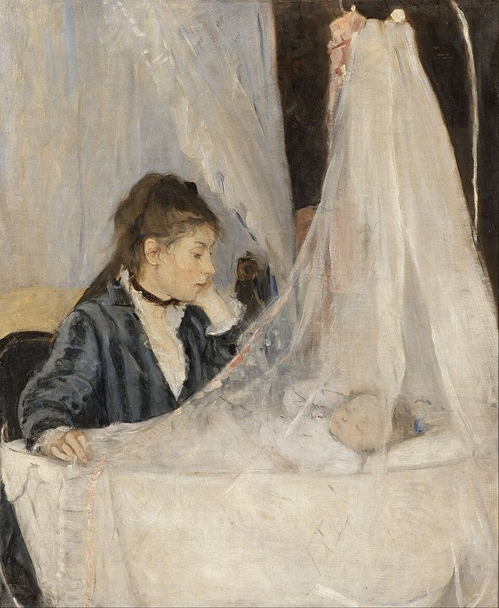

Pour Filomeni · DELF B2
Révision en attendant notre prochaine leçon
Une petite révision de grammaire française – Niveau B2
Le pont des Arts et l'Institut de France, Paris
Bonjour Filomeni ! Voici neuf points de grammaire essentiels pour le DELF B2. Pour chacun : un rappel de la règle à découvrir étape par étape, des exemples, deux cartes « pièges » et quelques exercices corrigés et expliqués. À la fin, votre bilan personnalisé vous attend. Prenez votre temps : environ une heure au total.
Hello Filomeni! Here are nine key grammar points for the DELF B2. For each one: a step-by-step rule reminder, examples, two 'pitfall' cards and a few corrected, explained exercises. Your personal review is waiting at the end. Take your time: about an hour in total.
Votre travail est enregistré automatiquement dans ce navigateur, sur cet appareil : vous pouvez fermer la page et revenir plus tard. Pour le retrouver sur un autre appareil ou un autre navigateur, utilisez « Exporter ma progression » en bas de la page.
Your work is saved automatically in this browser, on this device: you can close the page and come back later. To get it back on another device or browser, use 'Export my progress' at the bottom of the page.
01≈ 6 min
La négation
Negation
La pyramide du Louvre, Ieoh Ming Pei, 1989
Rappel de la règle · Rule reminder
Les formes principales : ne… pas, ne… jamais, ne… plus, ne… rien, ne… personne, ne… aucun(e), ne… ni… ni. Attention : ne… que n'est pas une négation, il signifie « seulement ».
The main forms: not, never, no longer, nothing, nobody, no / not any, neither… nor. Careful: ne… que is not a negation, it means 'only'.
Aux temps composés, pas, jamais, plus, rien se placent entre l'auxiliaire et le participe : je n'ai jamais lu Proust. Mais personne, aucun, ni… ni se placent après le participe : je n'ai vu personne.
In compound tenses, pas, jamais, plus, rien go between the auxiliary and the participle. But personne, aucun, ni… ni go after the participle.
À l'infinitif, les deux éléments se placent ensemble avant l'infinitif : il m'a conseillé de ne pas répondre, de ne plus attendre. Exception : de ne voir personne.
With an infinitive, both parts go together before the infinitive. Exception: de ne voir personne.
Sujet négatif : Personne n'est venu. Rien ne change. Aucun patient n'a annulé (sans « pas »). Après une négation, un, une, des deviennent de (sauf avec être) : je n'ai pas de rendez-vous, mais ce n'est pas un problème.
Negative subject: no 'pas'. After a negation, un, une, des become de (except with être).
Je n'ai rencontré personne à la conférence.
I didn't meet anyone at the conference.
Elle ne boit ni café ni thé après dix-huit heures.
She drinks neither coffee nor tea after 6 pm.
Je n'ai que deux séances ce matin.
I only have two sessions this morning.
Il vaut mieux ne rien dire pour l'instant.
It's better to say nothing for now.
Piège · Pitfall
Où place-t-on « personne » au passé composé ?
Where does 'personne' go in the passé composé?
↻ cliquez pour voir la réponse
Réponse · Answer
Après le participe : je n'ai vu personne.
After the participle: je n'ai vu personne.
Piège · Pitfall
« Je n'ai que dix minutes » : négation ou restriction ?
Negation or restriction?
↻ cliquez pour voir la réponse
Réponse · Answer
Restriction : = j'ai seulement dix minutes.
Restriction: = I only have ten minutes.
Exercices · Exercises
1
Hier soir, je …… au vernissage.
Hier soir, je ne suis pas allée au vernissage.
Last night I didn't go to the private view.
💡 Temps composé : ne + auxiliaire + pas + participe.
Compound tense: ne + auxiliary + pas + participle.
2
Je n'ai rencontré …… d'intéressant au congrès.
Je n'ai rencontré personne d'intéressant au congrès.
I didn't meet anyone interesting at the conference.
💡 Ne… personne, sans « pas » ; personne + de + adjectif.
Ne… personne, no 'pas'; personne + de + adjective.
3
Ma collègue m'a conseillé de …… trop tôt.
Ma collègue m'a conseillé de ne pas conclure trop tôt.
My colleague advised me not to conclude too early.
💡 À l'infinitif : ne pas + infinitif.
With an infinitive: ne pas + infinitive.
4
…… ne m'a prévenue du retard.
Personne ne m'a prévenue du retard.
Nobody warned me about the delay.
💡 Personne en position sujet + ne, sans « pas ».
Personne as subject + ne, without 'pas'.
Mettez à la forme négative avec « ne… plus ».
5
J'ai encore des séances le samedi.
Je n'ai plus de séances le samedi.
I no longer have sessions on Saturdays.
💡 Ne… plus + de (des devient de après la négation).
Ne… plus + de (des becomes de after a negation).
Mettez à la forme négative.
6
Il a vu quelqu'un dans la salle d'attente.
Il n'a vu personne dans la salle d'attente.
He didn't see anyone in the waiting room.
💡 Quelqu'un → personne, placé après le participe.
Quelqu'un → personne, after the participle.
Corrigez la phrase.
7
Je n'ai pas aucune idée.
Je n'ai aucune idée.
I have no idea.
💡 Aucun remplace « pas » : on ne les cumule jamais.
Aucun replaces 'pas': never use both.
Traduisez en français.
8
I drink neither coffee nor tea.
Je ne bois ni café ni thé.
I drink neither coffee nor tea.
💡 Ne… ni… ni, sans article.
Ne… ni… ni, without an article.
02≈ 7 min
Les temps du passé
Past tenses
L'horloge du musée d'Orsay, ancienne gare de 1900
Rappel de la règle · Rule reminder
Passé composé : une action ponctuelle, terminée, ou une succession d'actions. Imparfait : la description, le décor, l'habitude, une action en cours d'accomplissement.
Passé composé: a one-off, completed action, or a series of actions. Imperfect: description, background, habit, an action in progress.
Plus-que-parfait (avoir/être à l'imparfait + participe) : une action antérieure à une autre action passée. Passé récent : venir de + infinitif (au passé : je venais de + infinitif).
Pluperfect: an action that happened before another past action. Recent past: venir de + infinitive (in the past: je venais de).
Concordance : avec un verbe introducteur au passé, le présent devient imparfait, le passé composé devient plus-que-parfait, le futur devient conditionnel ; demain devient le lendemain, hier devient la veille.
Sequence of tenses: after a past reporting verb, present → imperfect, passé composé → pluperfect, future → conditional; tomorrow → the next day, yesterday → the day before.
Il pleuvait quand je suis sortie du musée.
It was raining when I left the museum.
Quand je suis arrivée, la patiente était déjà partie.
When I arrived, the patient had already left.
Je venais de raccrocher quand tu as sonné.
I had just hung up when you rang.
Elle m'a dit qu'elle viendrait le lendemain.
She told me she would come the next day.
Piège · Pitfall
« Quand j'étais petite » ou « quand j'ai été petite » ?
Which one?
↻ cliquez pour voir la réponse
Réponse · Answer
Quand j'étais petite : c'est une période, une description → imparfait.
A period, a description → imperfect.
Piège · Pitfall
Comment rapporter « Je viendrai demain » au passé ?
How do you report it in the past?
↻ cliquez pour voir la réponse
Réponse · Answer
Il a dit qu'il viendrait le lendemain.
He said he would come the next day.
Exercices · Exercises
1
Quand je suis arrivée au cabinet, la patiente …… : je l'ai manquée.
Quand je suis arrivée au cabinet, la patiente était déjà partie : je l'ai manquée.
When I arrived at the practice, the patient had already left: I missed her.
💡 Action antérieure à « je suis arrivée » → plus-que-parfait.
Action before 'I arrived' → pluperfect.
2
Pendant mon enfance, nous …… chaque été en Crète.
Pendant mon enfance, nous passions chaque été en Crète.
During my childhood we spent every summer in Crete.
💡 Habitude dans le passé → imparfait.
Past habit → imperfect.
3
Je lisais tranquillement quand, soudain, le téléphone …….
Je lisais tranquillement quand, soudain, le téléphone a sonné.
I was reading quietly when suddenly the phone rang.
💡 Action ponctuelle qui interrompt → passé composé.
A sudden action interrupting another → passé composé.
4
Elle m'a dit qu'elle …… le livre la veille.
Elle m'a dit qu'elle avait lu le livre la veille.
She told me she had read the book the day before.
💡 Concordance : passé composé → plus-que-parfait.
Sequence of tenses: passé composé → pluperfect.
Complétez avec « venir de » à l'imparfait.
5
Je …… terminer ma séance quand tu as appelé.
venais de
I had just finished my session when you called.
💡 Passé récent dans un récit : venais de + infinitif.
Recent past in a narrative: venais de + infinitive.
Rapportez la phrase au passé.
6
« Je prendrai le train demain. » → Il a dit qu'il…
Il a dit qu'il prendrait le train le lendemain.
He said he would take the train the next day.
💡 Futur → conditionnel ; demain → le lendemain.
Future → conditional; tomorrow → the next day.
Corrigez la phrase.
7
Quand j'ai été petite, j'habitais à Athènes.
Quand j'étais petite, j'habitais à Athènes.
When I was little, I lived in Athens.
💡 Une période de la vie → imparfait.
A period of life → imperfect.
Traduisez en français.
8
I had already read the novel when I saw the film.
J'avais déjà lu le roman quand j'ai vu le film.
I had already read the novel when I saw the film.
💡 Antériorité → plus-que-parfait ; « déjà » entre l'auxiliaire et le participe.
Earlier action → pluperfect; 'déjà' between the auxiliary and the participle.
03≈ 6 min
Les temps du futur
Future tenses
Le palais Garnier, Charles Garnier, 1875
Rappel de la règle · Rule reminder
Futur proche (aller + infinitif) : une action imminente ou déjà décidée. Futur simple : les projets, les prévisions, les promesses.
Near future: an imminent or already decided action. Simple future: plans, forecasts, promises.
Futur antérieur (avoir/être au futur + participe) : une action qui sera terminée avant une autre action future, ou avant un moment précis. Dès que j'aurai fini, je t'appellerai.
Future perfect: an action that will be finished before another future action or a given moment.
Après quand, lorsque, dès que, aussitôt que, on utilise le futur si l'action est future, contrairement à l'anglais. Hypothèse : si + présent → futur.
After quand, lorsque, dès que, aussitôt que, French uses the future, unlike English. Hypothesis: si + present → future.
Quand je serai à Paris, j'irai voir l'exposition.
When I'm in Paris, I'll go and see the exhibition.
D'ici juin, nous aurons terminé la formation.
By June, we will have finished the training.
Si tu réserves maintenant, tu auras une meilleure place.
If you book now, you'll get a better seat.
Attention, le train va partir !
Careful, the train is about to leave!
Piège · Pitfall
« Quand je suis à Paris demain » : correct ?
Correct?
↻ cliquez pour voir la réponse
Réponse · Answer
Non : quand je serai à Paris (futur après quand).
No: future after quand.
Piège · Pitfall
À quoi sert le futur antérieur ?
What is the future perfect for?
↻ cliquez pour voir la réponse
Réponse · Answer
À une action terminée avant une autre action future.
An action finished before another future action.
Exercices · Exercises
1
Quand tu …… à Paris, appelle-moi.
Quand tu arriveras à Paris, appelle-moi.
When you get to Paris, call me.
💡 Après quand + action future → futur.
After quand + future action → future.
2
Dès que j'…… mon rapport, je te l'enverrai.
Dès que j'aurai terminé mon rapport, je te l'enverrai.
As soon as I've finished my report, I'll send it to you.
💡 Action terminée avant l'envoi → futur antérieur.
Finished before the sending → future perfect.
3
Si tu réserves maintenant, tu …… une meilleure place.
Si tu réserves maintenant, tu auras une meilleure place.
If you book now, you'll get a better seat.
💡 Si + présent → futur.
Si + present → future.
4
Vite, la séance …… commencer !
Vite, la séance va commencer !
Quick, the session is about to start!
💡 Action imminente → futur proche.
Imminent action → near future.
Conjuguez au futur antérieur.
5
D'ici juin, nous (terminer) …… la formation.
aurons terminé
By June we will have finished the training.
💡 Avoir au futur + participe passé.
Avoir in the future + past participle.
Conjuguez au futur antérieur.
6
Lorsque vous (lire) …… ce chapitre, vous comprendrez mieux Freud.
aurez lu
Once you have read this chapter, you will understand Freud better.
💡 La lecture sera terminée avant la compréhension.
The reading will be finished before the understanding.
Corrigez la phrase.
7
Quand je suis en Grèce l'été prochain, je nagerai tous les jours.
Quand je serai en Grèce l'été prochain, je nagerai tous les jours.
When I'm in Greece next summer, I'll swim every day.
💡 Quand + futur pour une action future.
Quand + future for a future action.
Traduisez en français.
8
As soon as she has finished, she will call you.
Dès qu'elle aura fini, elle t'appellera.
As soon as she has finished, she will call you.
💡 « has finished » → futur antérieur ; « will call » → futur.
'has finished' → future perfect; 'will call' → future.
04≈ 7 min
L'expression du temps et de la durée
Expressing time and duration
Le pont Alexandre III, 1896-1900
Rappel de la règle · Rule reminder
Depuis + présent : une situation qui continue. Il y a… que / cela (ça) fait… que + présent = depuis. Il y a + passé : un moment passé (il y a trois ans).
Depuis + present: an ongoing situation. Il y a… que / cela fait… que + present = depuis. Il y a + past tense: 'ago'.
Pendant : une durée limitée. En : le temps nécessaire (en deux heures). Dans : un moment dans le futur (dans dix minutes). Pour : une durée prévue, avec partir, venir, être là. Jusqu'à : la limite.
Pendant: a limited period. En: time taken. Dans: a point in the future. Pour: an intended duration. Jusqu'à: until.
Depuis que, dès que, lorsque, pendant que, après que + indicatif. Avant que + subjonctif. Attention : après que + indicatif (après qu'il est parti).
These conjunctions take the indicative, except avant que + subjunctive. Après que takes the indicative.
Je vis à Berlin depuis 2019.
I've been living in Berlin since 2019.
Cela fait deux ans que j'apprends le français.
I've been learning French for two years.
J'ai lu ce roman en un week-end.
I read this novel in a weekend.
Je t'appellerai avant que tu partes.
I'll call you before you leave.
Piège · Pitfall
« Dans deux jours » ou « en deux jours » ?
Which one?
↻ cliquez pour voir la réponse
Réponse · Answer
Dans = moment futur (je pars dans deux jours) ; en = temps nécessaire (je l'ai lu en deux jours).
Dans = in two days' time; en = within two days.
Piège · Pitfall
Après que + subjonctif ?
Après que + subjunctive?
↻ cliquez pour voir la réponse
Réponse · Answer
Non : après que + indicatif (après qu'il est parti).
No: après que + indicative.
Exercices · Exercises
1
Je travaille dans ce cabinet …… cinq ans.
Je travaille dans ce cabinet depuis cinq ans.
I've been working in this practice for five years.
💡 Situation qui continue → depuis + présent.
Ongoing situation → depuis + present.
2
J'ai lu ce roman …… un week-end.
J'ai lu ce roman en un week-end.
I read this novel in a weekend.
💡 Temps nécessaire → en.
Time taken → en.
3
Le séminaire commence …… dix minutes.
Le séminaire commence dans dix minutes.
The seminar starts in ten minutes.
💡 Moment futur → dans.
Point in the future → dans.
4
Nous partons à Corfou …… deux semaines.
Nous partons à Corfou pour deux semaines.
We're going to Corfu for two weeks.
💡 Durée prévue avec partir → pour.
Intended duration with partir → pour.
5
Je t'appellerai avant que tu …….
Je t'appellerai avant que tu partes.
I'll call you before you leave.
💡 Avant que + subjonctif.
Avant que + subjunctive.
6
Après qu'il …… parti, nous avons parlé librement.
Après qu'il est parti, nous avons parlé librement.
After he left, we talked freely.
💡 Après que + indicatif.
Après que + indicative.
7
…… elle vit à Berlin, elle voyage beaucoup.
Depuis qu' elle vit à Berlin, elle voyage beaucoup.
Since she has been living in Berlin, she travels a lot.
💡 Point de départ d'une situation → depuis que.
Starting point of a situation → depuis que.
Reformulez avec « Cela fait… que ».
8
J'apprends le français depuis deux ans.
Cela fait deux ans que j'apprends le français.
I've been learning French for two years.
💡 Cela fait + durée + que + présent.
Cela fait + duration + que + present.
05≈ 6 min
Les pronoms compléments
Object pronouns
La galerie des Glaces, château de Versailles, 1678-1684
Rappel de la règle · Rule reminder
COD (sans préposition) : le, la, l', les. COI (à + personne) : lui, leur. En remplace de + nom ou une quantité. Y remplace à + chose ou un lieu.
Direct object: le, la, les. Indirect object (à + person): lui, leur. En replaces de + noun or a quantity. Y replaces à + thing or a place.
Place : devant le verbe conjugué ; aux temps composés, devant l'auxiliaire ; avec un infinitif, devant l'infinitif (je dois leur répondre).
Position: before the conjugated verb; before the auxiliary in compound tenses; before the infinitive.
Avec avoir, le participe s'accorde avec le COD placé avant : ces lettres, je les ai lues. Pas d'accord avec en. Avec penser à, s'intéresser à + personne : à lui, à elle (je pense à elle).
With avoir, the participle agrees with a preceding direct object. No agreement with en. Penser à + person → à lui / à elle.
Ta collègue ? Je lui ai parlé ce matin.
Your colleague? I spoke to her this morning.
Ces articles, je les ai tous lus.
These articles, I've read them all.
Athènes ? J'y retourne en mai.
Athens? I'm going back there in May.
Des patients ? J'en ai vu six aujourd'hui.
Patients? I saw six today.
Piège · Pitfall
« Je lui pense » : correct ?
Correct?
↻ cliquez pour voir la réponse
Réponse · Answer
Non : je pense à lui / à elle.
No: je pense à lui / à elle.
Piège · Pitfall
La lettre ? Je l'ai écrit… ?
Agreement?
↻ cliquez pour voir la réponse
Réponse · Answer
Écrite : le COD l' (= la lettre) est placé avant.
Écrite: the direct object comes before.
Exercices · Exercises
1
Tu as parlé à ta collègue ? — Oui, je …… ai parlé.
Tu as parlé à ta collègue ? — Oui, je lui ai parlé.
Did you speak to your colleague? — Yes, I spoke to her.
💡 Parler à quelqu'un → COI → lui.
Parler à → indirect object → lui.
2
Ces articles, je …… ai tous lus.
Ces articles, je les ai tous lus.
These articles, I've read them all.
💡 Lire quelque chose → COD → les.
Lire → direct object → les.
3
Tu vas à Athènes en mai ? — Oui, j'…… vais.
Tu vas à Athènes en mai ? — Oui, j'y vais.
Are you going to Athens in May? — Yes, I am.
💡 Lieu introduit par à → y.
Place with à → y.
4
Des patients ? J'…… ai vu six ce matin.
Des patients ? J'en ai vu six ce matin.
Patients? I saw six this morning.
💡 Quantité → en (et pas d'accord du participe).
Quantity → en (no agreement).
Accordez le participe passé.
5
La lettre ? Je l'ai (écrire) …… hier.
écrite
The letter? I wrote it yesterday.
💡 COD l' (féminin) placé avant avoir → écrite.
Feminine direct object before avoir → écrite.
Remplacez le complément par un pronom.
6
Je dois répondre à mes patients.
Je dois leur répondre.
I have to reply to them.
💡 Répondre à + personnes → leur, devant l'infinitif.
Répondre à + people → leur, before the infinitive.
Corrigez la phrase.
7
Je lui pense souvent.
Je pense souvent à lui.
I often think of him / her.
💡 Penser à + personne → à lui / à elle, après le verbe.
Penser à + person → à lui / à elle.
06≈ 6 min
Les doubles pronoms
Double pronouns
Les vitraux de la Sainte-Chapelle, 1242-1248
Rappel de la règle · Rule reminder
Ordre devant le verbe : me, te, se, nous, vous → le, la, les → lui, leur → y → en. Il me le donne. Je le lui donne. Je leur en parle. Il y en a.
Order before the verb: me/te/se/nous/vous → le/la/les → lui/leur → y → en.
À l'impératif affirmatif : verbe + COD + COI, avec des traits d'union : Donne-le-moi. Envoyez-la-leur. Devant en : moi → m' (donne-m'en).
Affirmative imperative: verb + direct + indirect, with hyphens. Before en: moi → m'.
À l'impératif négatif, on garde l'ordre normal : Ne me le donne pas. Ne leur en parle pas.
Negative imperative: normal order.
Le livre ? Je le lui ai rendu hier.
The book? I gave it back to her yesterday.
Les clés ? Elle me les a données.
The keys? She gave them to me.
Le dossier ? Envoie-le-moi ce soir !
The file? Send it to me tonight!
Ne leur en parle pas encore !
Don't tell them about it yet!
Piège · Pitfall
« Je lui le donne » : correct ?
Correct?
↻ cliquez pour voir la réponse
Réponse · Answer
Non : je le lui donne (le avant lui).
No: le before lui.
Piège · Pitfall
Impératif : donne-moi-le ou donne-le-moi ?
Which one?
↻ cliquez pour voir la réponse
Réponse · Answer
Donne-le-moi : COD avant COI.
Direct object before indirect.
Exercices · Exercises
1
Tu as rendu le livre à Sophie ? — Oui, je …… ai rendu.
Tu as rendu le livre à Sophie ? — Oui, je le lui ai rendu.
Did you give the book back to Sophie? — Yes, I gave it back to her.
💡 Ordre : le + lui.
Order: le + lui.
2
Elle t'a donné les clés ? — Oui, elle …… a données.
Elle t'a donné les clés ? — Oui, elle me les a données.
Did she give you the keys? — Yes, she gave them to me.
💡 me avant les ; accord : données (les clés).
me before les; agreement: données.
3
Le dossier ? Envoie-…… demain !
Le dossier ? Envoie-le-moi demain !
The file? Send it to me tomorrow!
💡 Impératif affirmatif : COD + moi.
Affirmative imperative: direct object + moi.
4
Des conseils ? Ne …… donne pas trop !
Des conseils ? Ne leur en donne pas trop !
Advice? Don't give them too much!
💡 Impératif négatif : ordre normal, leur + en.
Negative imperative: normal order, leur + en.
Remplacez les deux compléments.
5
Il parle de son projet à ses collègues.
Il leur en parle.
He talks to them about it.
💡 à ses collègues → leur ; de son projet → en ; leur avant en.
leur before en.
Remplacez le COD par un pronom.
6
Montre-moi tes photos de Grèce !
Montre-les-moi !
Show them to me!
💡 Impératif affirmatif : les avant moi.
Affirmative imperative: les before moi.
Traduisez en français (tu).
7
Don't tell her about it!
Ne lui en parle pas !
Don't tell her about it!
💡 Impératif négatif : ne + lui + en + verbe + pas.
Negative imperative: ne + lui + en + verb + pas.

07≈ 6 min
Les pronoms relatifs simples
Simple relative pronouns
Le Berceau, Berthe Morisot, 1872 · Musée d'Orsay
Rappel de la règle · Rule reminder
Qui : sujet du verbe (la patiente qui attend). Que : COD (le tableau que j'ai vu ; accord du participe : la toile que j'ai vue).
Qui: subject. Que: direct object (with agreement of the participle).
Dont remplace un complément introduit par de : parler de, avoir besoin de, se souvenir de, et le complément du nom (une collègue dont j'admire le travail).
Dont replaces a complement with de, including 'whose'.
Où : le lieu et le temps (la ville où je vis, le jour où je suis arrivée). Attention : on dit « le jour où », jamais « le jour que ».
Où: place and time ('the day when').
C'est le livre dont je t'ai parlé.
It's the book I told you about.
La patiente qui attend est en avance.
The patient who is waiting is early.
Je me souviens du jour où je suis arrivée à Berlin.
I remember the day I arrived in Berlin.
C'est exactement ce dont j'ai besoin.
That's exactly what I need.
Piège · Pitfall
« C'est ce que j'ai besoin » : correct ?
Correct?
↻ cliquez pour voir la réponse
Réponse · Answer
Non : ce dont j'ai besoin (avoir besoin de).
No: avoir besoin de → dont.
Piège · Pitfall
« Le jour que je suis arrivée » ?
Correct?
↻ cliquez pour voir la réponse
Réponse · Answer
Non : le jour où je suis arrivée.
No: le jour où.
Exercices · Exercises
1
C'est le livre …… je t'ai parlé.
C'est le livre dont je t'ai parlé.
It's the book I told you about.
💡 Parler de → dont.
Parler de → dont.
2
La patiente …… attend est en avance.
La patiente qui attend est en avance.
The patient who is waiting is early.
💡 Sujet de « attend » → qui.
Subject → qui.
3
Le tableau …… j'ai vu au Louvre m'a beaucoup émue.
Le tableau que j'ai vu au Louvre m'a beaucoup émue.
The painting I saw at the Louvre moved me deeply.
💡 COD de « j'ai vu » → que.
Direct object → que.
4
Je me souviens du jour …… je suis arrivée à Berlin.
Je me souviens du jour où je suis arrivée à Berlin.
I remember the day I arrived in Berlin.
💡 Temps → où.
Time → où.
5
C'est une collègue …… j'admire le travail.
C'est une collègue dont j'admire le travail.
She's a colleague whose work I admire.
💡 Le travail de la collègue → dont.
'whose' → dont.
Corrigez la phrase.
6
C'est ce que j'ai besoin.
C'est ce dont j'ai besoin.
That's what I need.
💡 Avoir besoin de → ce dont.
Avoir besoin de → ce dont.
Reliez les deux phrases avec un pronom relatif.
7
J'ai lu un roman. L'auteur de ce roman est grec.
J'ai lu un roman dont l'auteur est grec.
I read a novel whose author is Greek.
💡 Complément du nom (l'auteur du roman) → dont.
'whose' → dont.
08≈ 6 min
Les pronoms relatifs composés
Compound relative pronouns
Le château de Chambord, 1519-1547
Rappel de la règle · Rule reminder
Après une préposition, surtout pour une chose : lequel, laquelle, lesquels, lesquelles (le fauteuil sur lequel, la raison pour laquelle). Pour une personne, on préfère qui : la collègue avec qui je travaille.
After a preposition, mostly for things. For people, qui is preferred.
À + lequel → auquel, auxquels, auxquelles (mais à laquelle) : le projet auquel je pense, les conférences auxquelles j'ai assisté.
À + lequel contracts: auquel, auxquels, auxquelles (but à laquelle).
De + lequel → duquel, desquels, desquelles (mais de laquelle), surtout après une locution : près de, à côté de, au cours de. Le musée près duquel j'habite. Ici, dont est impossible.
De + lequel contracts, mainly after près de, à côté de, au cours de, where dont is impossible.
La raison pour laquelle je vous écris est simple.
The reason why I'm writing to you is simple.
Les conférences auxquelles j'ai assisté étaient passionnantes.
The lectures I attended were fascinating.
Le musée près duquel j'habite est fermé le lundi.
The museum near which I live is closed on Mondays.
La collègue avec qui je travaille est grecque.
The colleague I work with is Greek.
Piège · Pitfall
« Le musée près dont j'habite » ?
Correct?
↻ cliquez pour voir la réponse
Réponse · Answer
Non : près duquel (après une locution avec de, dont est impossible).
No: près duquel.
Piège · Pitfall
À + lesquelles = ?
Contraction?
↻ cliquez pour voir la réponse
Réponse · Answer
auxquelles
auxquelles
Exercices · Exercises
1
Le fauteuil sur …… je m'assois date du XIXe siècle.
Le fauteuil sur lequel je m'assois date du XIXe siècle.
The armchair I sit on dates from the 19th century.
💡 le fauteuil : masculin singulier → lequel.
Masculine singular → lequel.
2
Les conférences …… j'ai assisté étaient passionnantes.
Les conférences auxquelles j'ai assisté étaient passionnantes.
The lectures I attended were fascinating.
💡 Assister à + féminin pluriel → auxquelles.
Assister à + feminine plural → auxquelles.
3
Le musée près …… j'habite est fermé le lundi.
Le musée près duquel j'habite est fermé le lundi.
The museum near which I live is closed on Mondays.
💡 Près de + masculin → duquel ; dont impossible.
Près de + masculine → duquel.
4
La raison pour …… je vous écris est simple.
La raison pour laquelle je vous écris est simple.
The reason why I'm writing to you is simple.
💡 Pour + la raison → pour laquelle.
Pour + feminine noun → pour laquelle.
5
C'est un projet …… je pense depuis des mois.
C'est un projet auquel je pense depuis des mois.
It's a project I've been thinking about for months.
💡 Penser à + masculin → auquel.
Penser à + masculine → auquel.
Reliez les deux phrases.
6
C'est un problème. Je réfléchis à ce problème.
C'est un problème auquel je réfléchis.
It's a problem I'm thinking about.
💡 Réfléchir à + masculin → auquel.
Réfléchir à → auquel.
Corrigez la phrase.
7
Les amis à lesquels j'écris vivent à Paris.
Les amis auxquels j'écris vivent à Paris.
The friends I write to live in Paris.
💡 À + lesquels → auxquels (ou à qui pour des personnes).
À + lesquels → auxquels (or à qui for people).
09≈ 6 min
Les pronoms indéfinis
Indefinite pronouns
La Petite Venise, Colmar
Rappel de la règle · Rule reminder
Quelqu'un, quelque chose ; au négatif personne, rien (avec ne). Avec un adjectif : quelque chose d'intéressant, personne de sérieux.
Someone, something; negative: nobody, nothing. With an adjective: + de.
Chacun(e) : toujours singulier (chaque est un adjectif : chaque patient, mais chacun). Certain(e)s, plusieurs (invariable). Aucun(e) + ne, au singulier.
Chacun is singular (chaque is an adjective). Certains, plusieurs (invariable). Aucun + ne, singular.
Tout, tous, toute, toutes : le pronom tous se prononce [tus]. N'importe qui / quoi / où / quand : l'indifférence, sans préférence.
Tout agrees; the pronoun tous is pronounced [tus]. N'importe qui/quoi/où/quand: 'anyone/anything/anywhere/any time'.
Chacun de mes patients a son histoire.
Each of my patients has their own story.
Il y a quelque chose d'important à te dire.
There's something important to tell you.
Ces livres ? Je les ai tous lus.
These books? I've read them all.
Tu peux venir n'importe quand.
You can come any time.
Piège · Pitfall
« Chaque de mes patients » ?
Correct?
↻ cliquez pour voir la réponse
Réponse · Answer
Non : chacun de mes patients (pronom).
No: chacun.
Piège · Pitfall
« Aucuns n'est venu » ?
Correct?
↻ cliquez pour voir la réponse
Réponse · Answer
Non : aucun n'est venu (toujours singulier).
No: always singular.
Exercices · Exercises
1
…… de mes patients a son histoire.
Chacun de mes patients a son histoire.
Each of my patients has their own story.
💡 Pronom singulier → chacun.
Singular pronoun → chacun.
2
Il y a …… d'important à te dire.
Il y a quelque chose d'important à te dire.
There's something important to tell you.
💡 Une chose + de + adjectif.
Something + de + adjective.
3
Tu peux venir …… : je suis libre toute la journée.
Tu peux venir n'importe quand : je suis libre toute la journée.
You can come any time: I'm free all day.
💡 Le moment est indifférent → n'importe quand.
Any time → n'importe quand.
4
Ces romans ? Je les ai …… lus.
Ces romans ? Je les ai tous lus.
These novels? I've read them all.
💡 Les romans : masculin pluriel → tous.
Masculine plural → tous.
5
…… n'a appelé ce matin : la ligne était coupée.
Personne n'a appelé ce matin : la ligne était coupée.
Nobody called this morning: the line was down.
💡 Sens négatif avec ne → personne.
Negative with ne → personne.
Complétez avec un pronom indéfini.
6
J'ai vu …… d'étrange au musée : un tableau sans cadre !
quelque chose
I saw something strange at the museum: a painting with no frame!
💡 Une chose indéterminée + de + adjectif.
Something + de + adjective.
Corrigez la phrase.
7
Plusieurs étudiantes sont venues, mais aucunes n'avait lu le texte.
Plusieurs étudiantes sont venues, mais aucune n'avait lu le texte.
Several students came, but none had read the text.
💡 Aucun(e) est toujours au singulier.
Aucun(e) is always singular.
Mon bilan · My review
Retrouver mon travail ailleurs · Getting my work back elsewhere
Sur cet appareil, tout est déjà enregistré. Pour continuer sur un autre ordinateur, une tablette ou un autre navigateur : téléchargez votre fichier de progression, puis ouvrez la leçon là-bas et importez-le. Vous pouvez aussi créer un lien qui contient vos réponses.
On this device everything is already saved. To carry on elsewhere: download your progress file, then open the lesson there and import it. You can also create a link containing your answers.